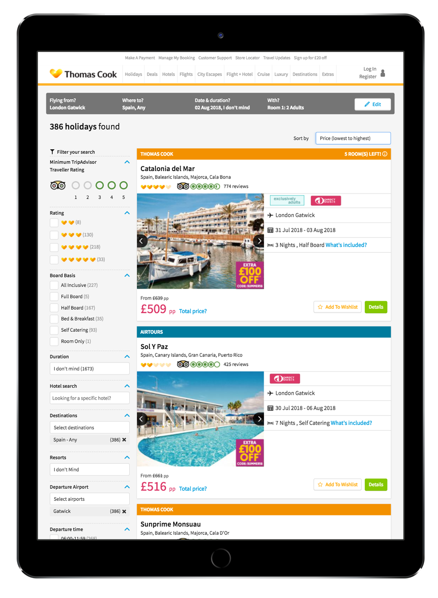

Informing the re-design of a Search Results Page
Thomas Cook

Overview of the project
The Thomas Cook search results page looked dated. On top of that, users complained that it was slow, and that the information was difficult to understand. A full re-design was needed, and user research was essential to make sure the changes weren't just cosmetic.
My role
- Plan and execute the research activities needed to identify pain points on the current page, and validate design decisions.
- Communicate the findings to make sure all stakeholders have a good understanding of users' needs and behaviours.
- Use the knowledge from the qualitative research to help understand the quantitative results.
The research
Some of the key activities that I lead:
- Identify issues, based on the data of qualitative and quantitative research, as well as queries to call centers.
- Facilitate usability testing with a series of pre-defined tasks, to investigate problem areas and potential fixes.
- Observe and interview users who are looking for their actual holidays, on a range of travel websites. This helped to understand:
- what information really matters to users to make a decision
- how users scan through the results,
- what works well on competitors' sites.
Key achievements
This is an on-going project. The Result Cards have been fully re-designed, and we are now working on the filters.

The most important changes so far are that:
- The amount of content on each result card has been reduced. This was a controversial change, so being able to back up the decisions with research data was very important.
- The design of the cards is cleaner, with one column, more white space, and icons. It makes it easier to scan the information.
Users can now quickly find the information they need to decide if they are interested in a holiday or not: we've measured a decrease in the number of product pages users have to visit before making a decision and booking.
 << See other examples of work